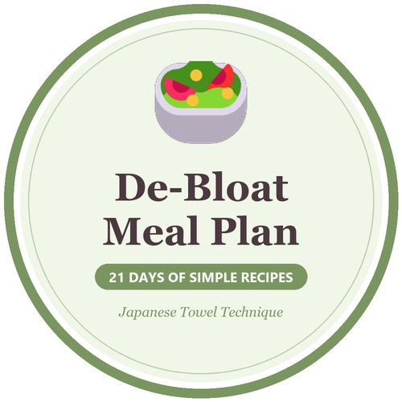

De-Bloat Meal Plan
21 days of simple recipes + a shopping list
How it works
- Follow the weekly menu for 3 weeks. Swap any meal for another one in the same category.
- One snack a day from the snack list, if you're hungry.
- Simple rules that help many women feel less bloated: eat slowly, drink water between meals, go easy on fizzy drinks, chewing gum, very salty and ultra-processed foods.
- Week 2: try a different vegetable in each dinner. Week 3: add a short 10-minute walk after dinner.
The recipes
Overnight oats with berries
½ cup rolled oats · ½ cup milk of choice · ¼ cup plain Greek yogurt · 1 tsp chia seeds · ½ cup berries. Mix everything except berries, refrigerate overnight, top with berries.
Spinach & egg scramble
2 eggs · 1 handful spinach · 1 tsp olive oil · pinch of salt and pepper · 1 slice whole-grain toast. Wilt spinach in oil, add beaten eggs, stir gently until just set.
Banana–ginger smoothie
1 small banana · ½ cup plain yogurt · ½ cup water or milk · ½ tsp grated ginger · 1 tbsp oats. Blend until smooth.
Chicken, rice & cucumber bowl
4 oz grilled chicken · ½ cup cooked rice · ½ cucumber · a few cherry tomatoes · lemon juice · olive oil · fresh herbs.
Tuna & potato salad
1 can tuna in water · 1 boiled potato, cubed · green beans · 1 tbsp olive oil · lemon · parsley.
Turkey & avocado wrap
1 whole-wheat tortilla · 3 oz sliced turkey · ¼ avocado · lettuce · grated carrot.
Lemon salmon with zucchini
4 oz salmon · 1 zucchini, sliced · lemon · 1 tsp olive oil · dill. Bake at 400°F (200°C) for 12–15 minutes.
Ginger chicken stir-fry
4 oz chicken strips · 1 cup mixed vegetables (carrot, bok choy, bell pepper) · 1 tsp grated ginger · 1 tbsp low-sodium soy sauce · ½ cup rice.
Turkey meatballs & sweet potato
4 oz ground turkey · herbs · 1 small sweet potato, roasted · steamed green beans.
Simple fish tacos
4 oz white fish · 2 corn tortillas · shredded lettuce · plain yogurt with lime as sauce.
Egg-fried rice
1 cup cooked rice · 1 egg · peas and carrots · green onion · 1 tsp sesame oil · low-sodium soy sauce.
Kiwi & yogurt cup
2 kiwis, sliced · ½ cup plain Greek yogurt.
Rice cakes & peanut butter
2 rice cakes · 1 tbsp peanut butter · banana slices.
Cucumber & hummus
1 cucumber in sticks · 2 tbsp hummus.
Shopping list (1 week)
Protein
- 12 eggs
- 1 lb chicken breast
- 2 salmon fillets
- 1 lb ground turkey
- Sliced turkey
- 2 cans tuna
- White fish fillet
- Plain Greek yogurt (large)
Produce
- Spinach
- Cucumbers (3)
- Cherry tomatoes
- Zucchini (2)
- Mixed stir-fry veg
- Green beans
- Sweet potatoes (2)
- Potatoes (2)
- Carrots
- Lettuce
- Avocado
- Bananas, berries, kiwis
- Lemons, limes, ginger, herbs
Pantry
- Rolled oats
- Chia seeds
- Rice
- Whole-wheat & corn tortillas
- Whole-grain bread
- Rice cakes
- Peanut butter
- Hummus
Basics
- Olive oil
- Sesame oil
- Low-sodium soy sauce
- Peppermint tea
- Milk of choice
- Frozen peas & carrots